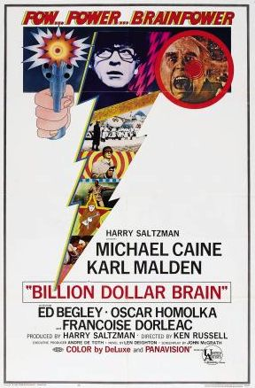
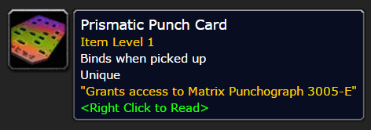

Punched Cards and Tabulating Machines
By Jonathan Brenders
Herman Hollerlith

Other Uses
- driving programmable machines
- Accounting and inventory tracking
- Even government checks and savings bonds

Billion Dollar Brain (1967)

World of Warcraft (2004)
Recap
- Cards intended to control simple machines
- Later used for simplistic computing
- Still used today, but no more holes
References
- Veronese, K. (2012, May 13). The birth of Scantrons, the bane of standardized testing. Retrieved March 23, 2017, from http://io9.gizmodo.com/5908833/the-birth-of-scantrons-the-bane-of-standardized-testing
- What is punch card? (n.d.). Retrieved March 23, 2017, from http://www.computerhope.com/jargon/p/punccard.htm
- Cruz, F. (2016, June 18). Films Depicting Vintage Computing Equipment in Action. Retrieved March 23, 2017, from http://www.columbia.edu/cu/computinghistory/films.html
- Wing and a Prayer (1944)
- Billion Dollar Brain (1967)
- World of Warcraft (2004)